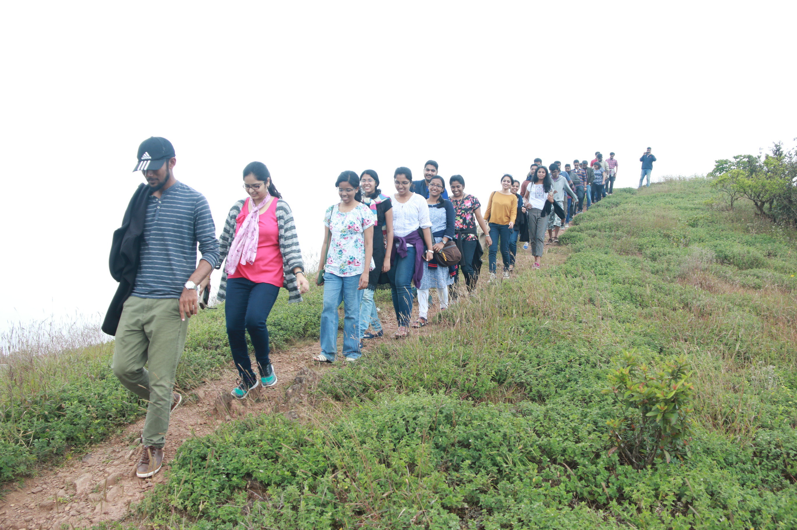
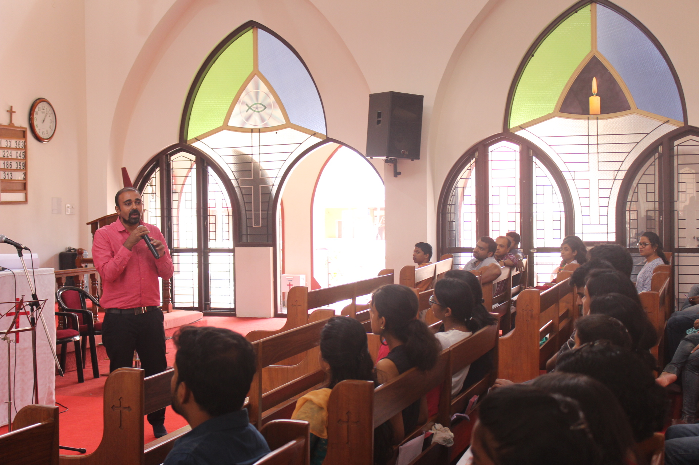

St. Thomas Mar Thoma Youth Fellowship is an enthusiastic and vibrant organization of the church.
The youth activities include regular Bible study, Cottage prayer, Praise & worship, Outreach events, Annual Retreats etc.
The youths are actively involved in all activities of the Church particularly co-ordinating the Christmas Carol round singing & Onam celebrations.
They also participate in various Church level and Diocese level sports and cultural programmes.

Youth Trip 2018
As part of this youth trip, we had gone to Coorg. This image was taken while trekking through the hill ranges.

Youth Retreat 2018
Every year we conduct a youth retreat. A fun filled session filled with ice breakers and spiritual learning.

Carolling
One of the most important youth activity of the year involves the youths visiting the houses of the members and singing carols. All donations received are directed to enable the education of poor people in our mission fields.
FIND US ON SOCIAL MEDIA